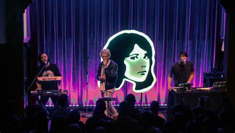

TV Girl
Quienes son

TV Girl es una banda de indie pop originaria de San Diego, conocida por su estilo nostálgico y sus melodías pegajosas. Desde su formación en 2010, han cautivado a fans de todo el mundo con su sonido único que mezcla elementos de pop, rock y electrónica